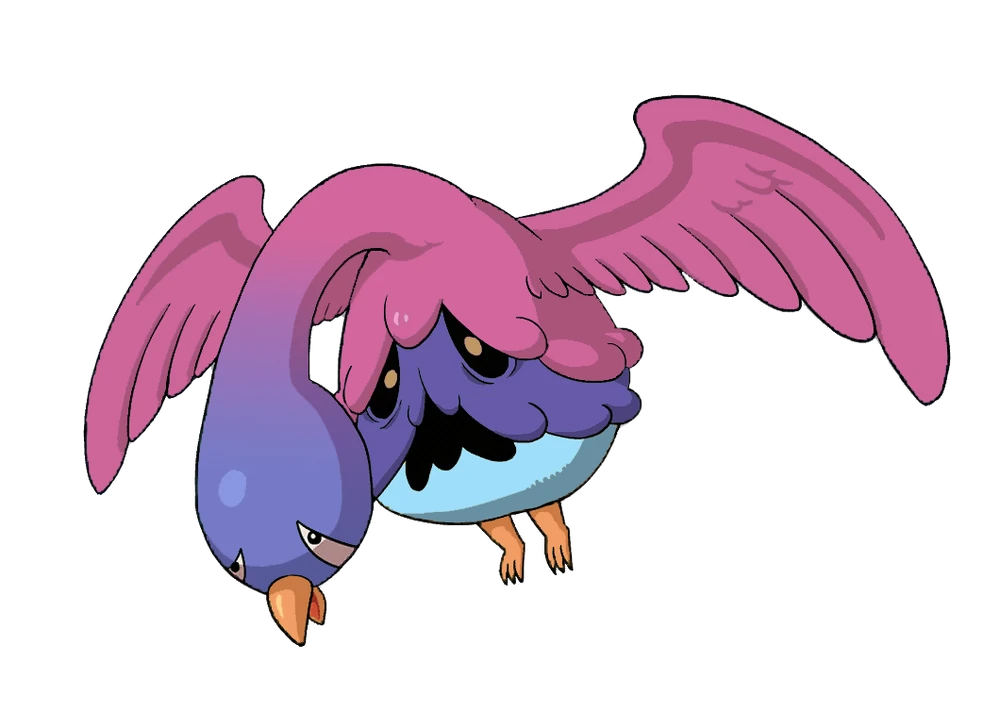
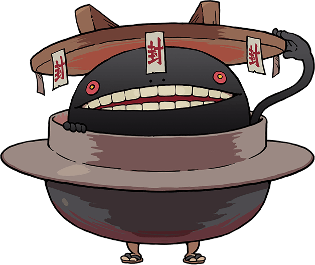

What's new?
Hello everyone! It's been a while since I released the last update (half a year at this point 😅).
However, in the meantime, I was able to improve many aspects of the website, as well as overcome
difficulties with migrating to the new databases.
What's new (2.2.0):
• Updated the structure of several pages, including:
- Medallium
- Yokai Info Page
- Damage calculator
- Move List
- Move Info Page
• Improved the internal structure of the website (JS, CSS)
• Updated visuals to use higher-resolution graphics (Medals, Yokai artwork, etc.)
• Added more details to the Yokai Info Page
• Fixed minor bugs
I might add more features in the future, depending on what you would like to see next.
This website is focused on creating tools and providing information to players.
However, if you're interested in other features like RAM editing, feel free to message me!
I might add them in the next update if they aren't too complicated to code.
Hope all of you will have a great day!
Below you can see all content that was added previously.

If you have any questions, you can contact me through my discord: @hilwin Update History: 2.1.0: • Update for move, item, yokai databases • Updated UI for Team Builder page 2.0.0: • Overhaul to the various databases with new data • Minor change to damage calculator • New yokai medals and artwork • Added in yokai creator 1.1.0: • Added Yo-Kai Data, that contains all of Yokai attacks and skills! • Added two more Wallpapers: "Oh My Swirls! Pattern", "Hearts and Fluff" • Divided Background into two separate parts • Added new icons to various pages! • Fixed various bugs related to IV, GYM and Attitude inputs • Fixed bug related to techniques not being found in damage calculator • Added missing Yokai to Yokai Database 1.0.0: • Added Tier Sheet, showing where each yokai is in the tiers. • Added moving Wallpapers! (Can be changed in top right corner; See below to see all new Wallpapers) • New design for Strategy Medallium • New design for Team Builder, added option to edit Yokai's stats, added Equipment (and Soul Gem) list • Added search option for some pages • Added Equipment List page • Added more fonts (See below for more information)